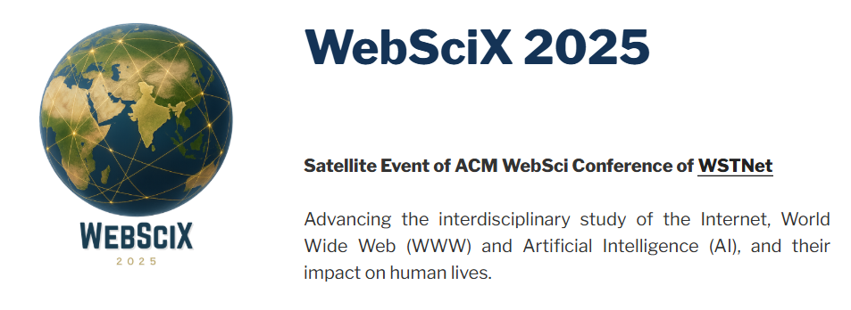

WebSciX 2026
20 Years of Web Science: Navigating the Era of Generative and Agentic AI
WebSciX India is a proposed satellite event of the ACM Web Science Conference, dedicated to advancing the interdisciplinary study of the Internet, World Wide Web (WWW), and Artificial Intelligence (AI) and their impact on human lives in India and surrounding regions. WebSciX builds upon the Web Science for Development (WS4D) series of events conducted in India since 2019.
Web Science integrates disciplines such as computer science, sociology, economics, and policy studies to explore the socio-technical dynamics of digital ecosystems. WebSciX India aims to build a regional community of experts to investigate these dynamics within India’s unique socio-cultural, economic, and technological context.
With over 800 million Internet users as of 2025, India’s digital landscape is shaped by its 1.4 billion population, diverse cultures, and rapid technological adoption. However, challenges like digital divides, misinformation, and privacy concerns remain.
Objectives
- Community Building
- Localized Research
- Innovative Solutions
- Global-Local Integration
Target Audience
- Academics and Researchers
- Technologists and Industry Experts
- Policymakers and Regulators
- Civil Society and NGOs
- Students and Researchers
Expected Outcomes
- Research Collaboration
- Knowledge Repository
- Community Network
- Actionable Interventions
- Global Contribution
Call to Action
WebSciX India invites researchers, technologists, policymakers, and civil society to join this initiative to shape the future of Web Science in India.